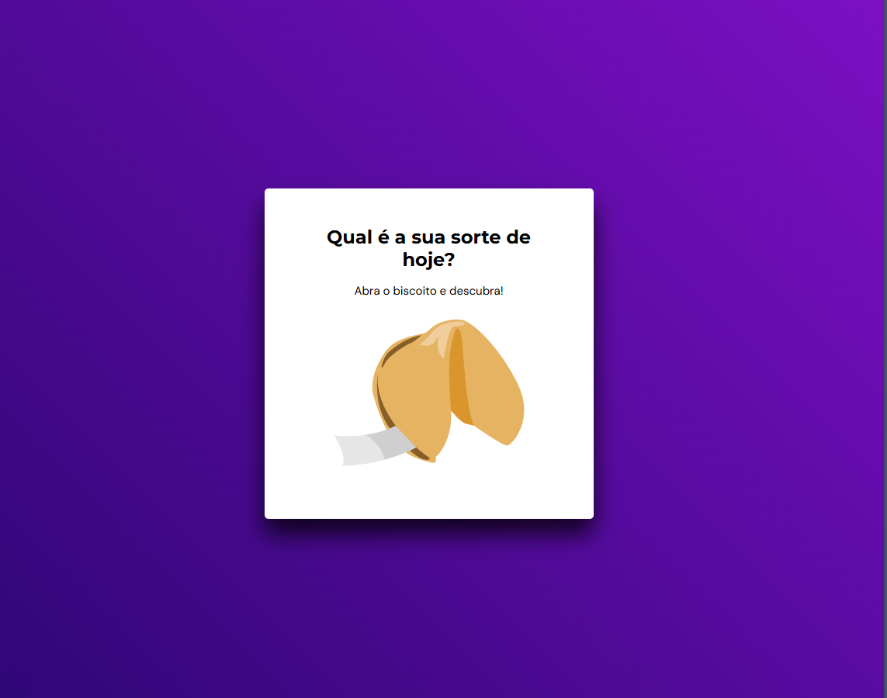
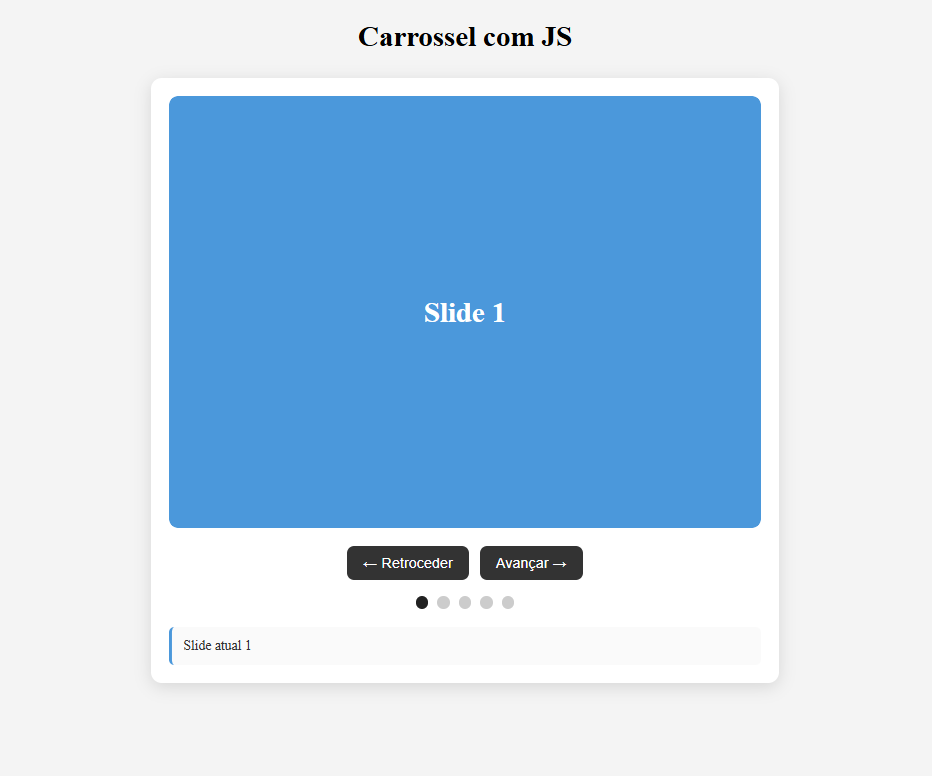

Sobre mim
Sou uma pessoa dedicada, tenho interesse por tecnologia, informática e resolução de problemas, além de gostar de trabalhar em equipe e buscar novos conhecimentos. Procuro sempre realizar minhas tarefas com organização, comprometimento e atenção aos detalhes. Estou em busca da minha primeira oportunidade profissional para desenvolver minhas habilidades, adquirir experiência e crescer tanto pessoal quanto profissionalmente.
Objetivos
Busco uma oportunidade de ingressar no mercado de trabalho, onde eu possa colocar em prática meus conhecimentos, aprender com a equipe, desenvolver novas competências e contribuir com dedicação, responsabilidade e vontade de evoluir profissionalmente.
Stacks
Meus projetos

